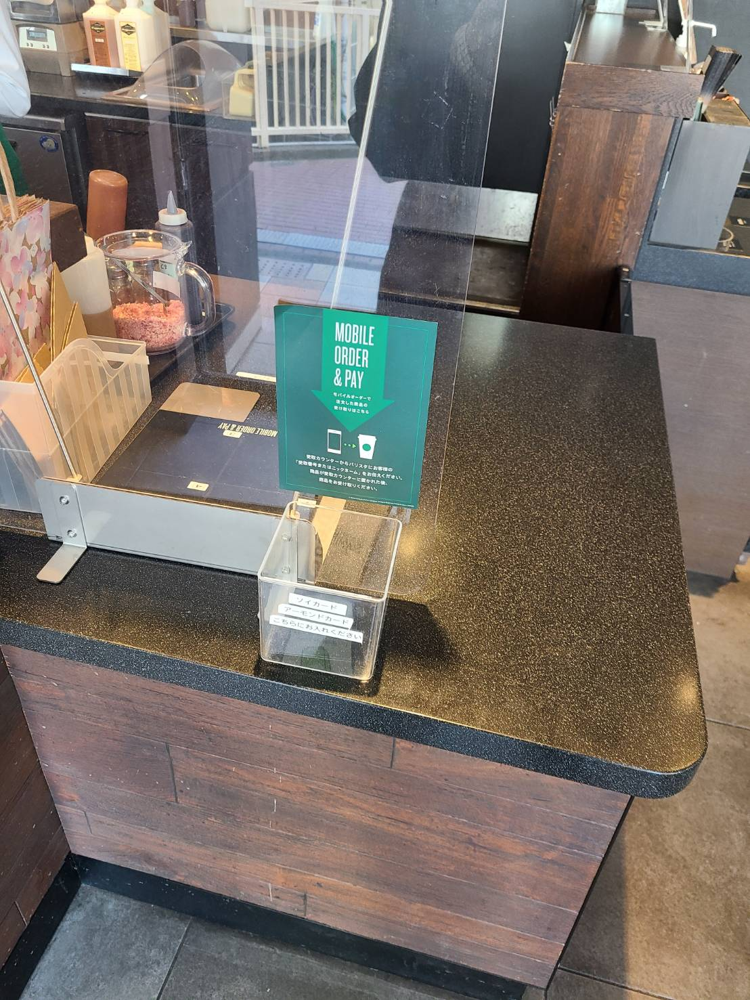
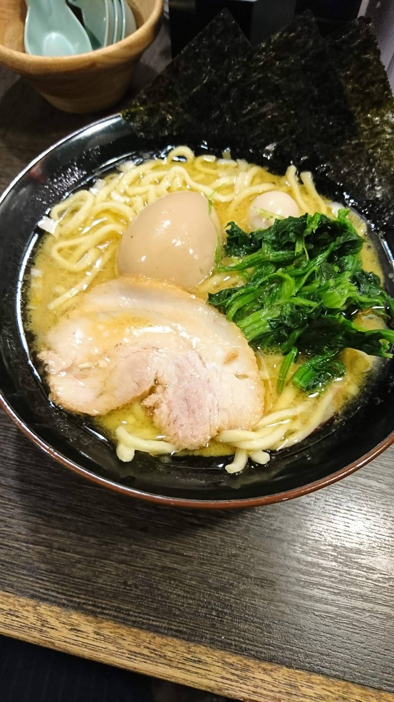

こんにちは！Shoです。今日で東日本大震災からちょうど10年が経ちました。もうそんなに時間が過ぎたんだなと思いながらも、被災地にまだ震災の傷が残っていることが悲しいですね。
さて、今日のブログでは、三つの飲食店に行ったことを日記として書いておきます。！
昼頃に松戸駅から歩いて2分のところにあるスタバに行きました。久しぶりにその店舗に入ったら、店内に感染防止のための透明のアクリルの パーティション がたくさん置かれていて、それでカウンターや座席を仕切られていました。自分が注文したドリンクを受け取る場所のパーティションは、正面にしか置かれておらず、横からは置かれていませんでした。ほんの気持ちぐらいしか立っていませんでした。今日スタバで 抹茶ティーラテ を飲んで、中国語を勉強して読書をしてお昼を過ごしました。
 午後2時すぎに、おかあさんといっしょに、僕の引っ越し祝いということで蕎麦屋に行きました。なぜ引っ越し祝いにそばを食べるのか知りたい人は、このサイト を開いて読んでみるのもよいでしょう。
その蕎麦屋に入ったら、接客をしていた人がなんと、僕が以前ハンバーガーチェーン店でアルバイトしていたときいた元店長だったのです！そのアルバイトでは、あまり僕の良い思い出がないので、その場所にいるのが気まずくなりました。ちょっとだけ「あわのさん、ぼくのことを覚えていますか」とか聞こうかなと思ったのですが、なんにせよ、あのアルバイトで僕は元店長の信頼を失わせたことがあるので、挨拶したら恥ずかしいだろうと思い、挨拶はしませんでした（苦笑）
しばらく待って、蕎麦が来ました。僕が注文したのは、鴨肉のそばでした。麺をつゆにつけて食べました。とても美味しかったです！！！なぜだか急いで無我夢中で食べたので、気が付いたらあっという間に麺がなくなっていました( ´∀｀ )
そしてつぎは家系ラーメンです。今日11日は、最寄り駅の壱角家がラーメン一杯500円のセールをやっているということで、自分の理性を抑えることができず、つい入ってしまいました。やはり家系ラーメンはおいしいです。麺の硬さや味の濃さ、油の量を自分で選べるだけでなく、しかもいろいろな調味料がカウンター席の前に置かれているので、自分の好きなようにラーメンに味をカスタマイズすることができるし、さらに美味しく楽しく頂くことができるので一石二鳥の気分になります。調味料の掛ける量にはもちろん注意しなければなりませんが、なにを掛けても、一回スープを飲んだらまたもう一回飲みたくなる、そんな中毒性のあるラーメンなので、もっと気を付けるべきなのは、そのスープを飲み過ぎないことです。こってりとしていて、味が濃いので、美味しすぎてまた飲みたくなってしまいますから。家系ラーメンを食べたあとは、「あーなんで今日ラーメン食べちゃったんだろう」と後悔して賢者モードに入ります。でも、一週間くらい時間が経てば、なぜだかまた家系ラーメンを食べに行きたくなってしまうんです。すでに僕は家系ラーメンの中毒者ですね、ハイ（笑）。
あなたはどれくらい意味と使い方を知っていますか？